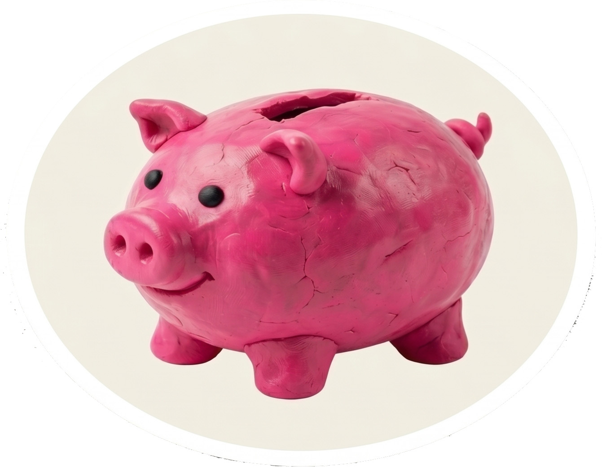

Minimal, calm, and easy to read.
This site uses only HTML, CSS, and a small weather widget. The design focuses on clean spacing, soft teal tones, and a simple page structure.
Enter the password to continue.
Creative, curious, and interested in simple storytelling through clean HTML and subtle color.
This site uses only HTML, CSS, and a small weather widget. The design focuses on clean spacing, soft teal tones, and a simple page structure.
I enjoy small moments where text and layout work together to create a calm experience that is easy to scan and understand.
Use the navigation above to see about and contact information. The whole site stays lightweight and works without a build step.
Loading…
Click the button below to allow location access and show your local weather.
Powered by Open-Meteo and your browser location.
